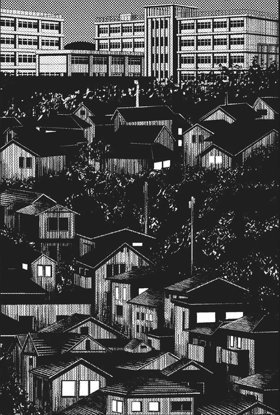

Cidade de Sendai

Introdução |
Localização |
Multimédia |
Informações |
Home
Localização
Japão (em japonês: Nippon; oficialmente 日本国: Nippon-koku ) é um país insular da Ásia Oriental. Localizado no Oceano Pacífico, a leste do Mar do Japão, da República Popular da China, da Coreia do Norte, da Coreia do Sul e da Rússia, estendendo-se do Mar de Okhotsk, no norte, ao Mar da China Oriental e Taiwan, ao sul.
Sendai localiza-se na costa nordeste da ilha de Honshu, numa estreita faixa costeira entre o Oceano Pacífico e uma zona montanhosa.